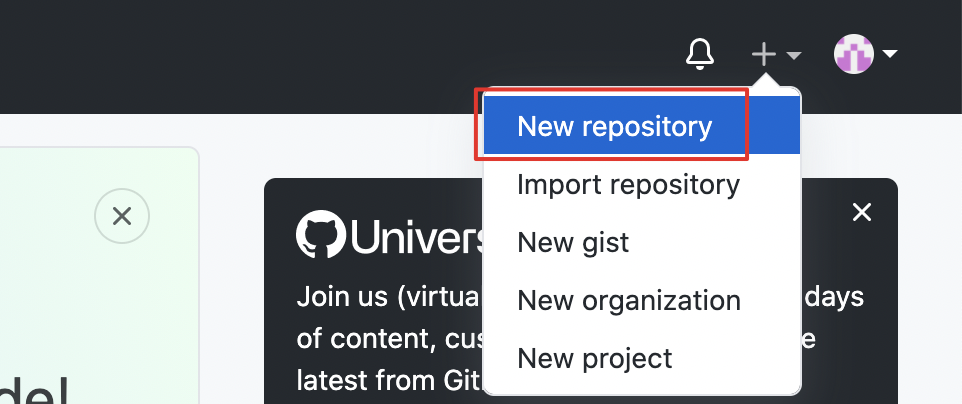
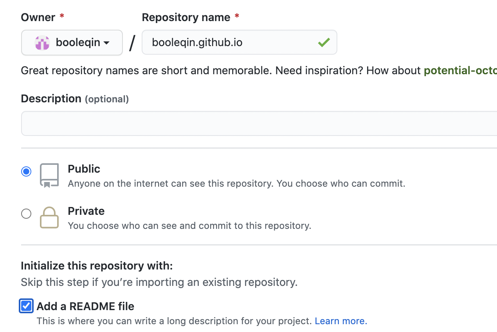
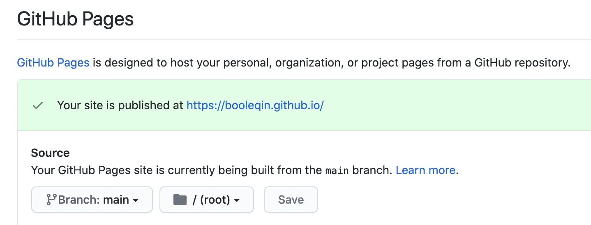
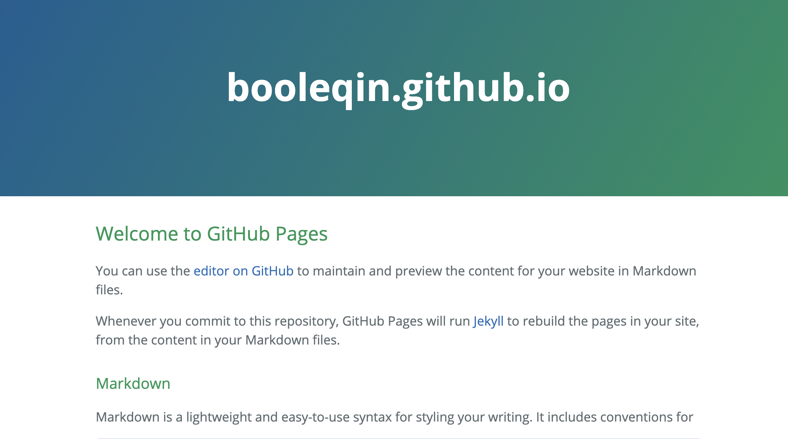
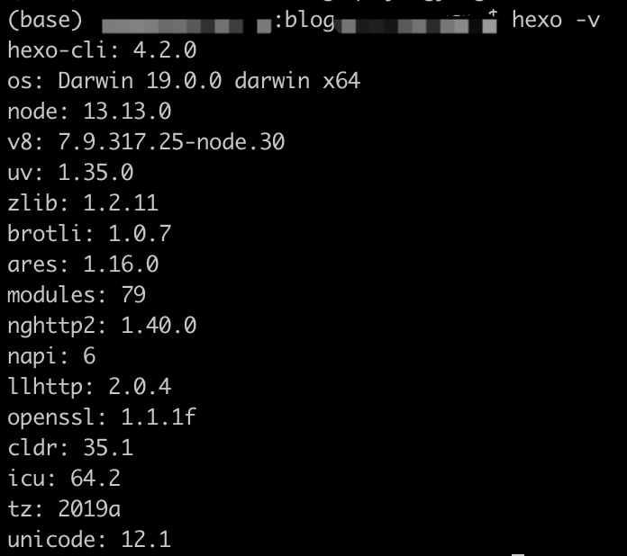
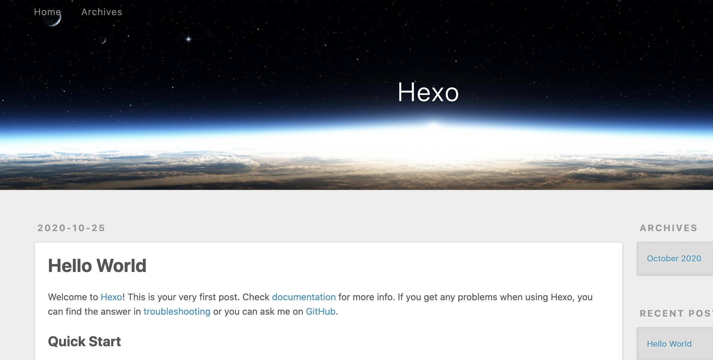
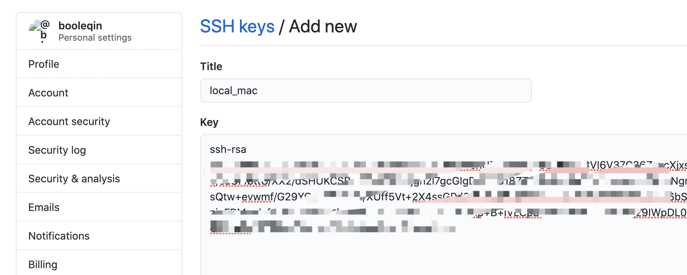
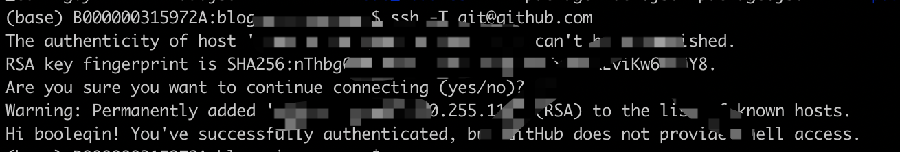
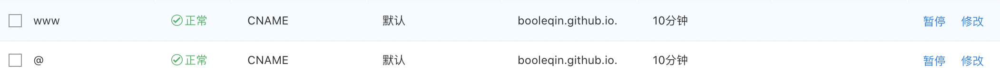

前言
现在写文章、写博客的地方这么多，为什么要自己搭建一个，还是希望有一个自己的自留地。
本来想自己完全写一个博客网站，但是苦于自己对前端的了解着实不深，而且后续也没有深入研究前端知识的计划，外加对网站自维护成本的担忧，最后选择了Hexo+Github的框架搭建博客。
网上有很多使用Hexo+Github搭建博客的教程，其实已经比较丰富了，为了供后续参考，也在这里记录一下自己的搭建过程。
Hexo是一个基于Node.js的静态站点生成框架，基于Hexo，我们可以直接用Markdown（对于我来说，现在写东西都用Markdown，感觉再也回不去Office Word了）来写博客。写完后通过三、四条命令就可以更新到博客上，专注在内容上，避免重复造轮子。
常用命令：
hexo clean # 清楚缓存文件
hexo g # 生成静态文件 hexo generate
hexo s # 启动本地服务预览 hexo server
hexo d # 上传到github部署 hexo deploy更多命令见：Hexo指令
主要步骤
- 安装Node.js
- 安装Git
- Github上创建博客项目
- 安装Hexo
- github与本地绑定
- 绑定域名
- 创建文章
- 个性化设置（Theme matery）
安装Node.js
mac上可以直接通过homebrew安装，可以通过brew -v看自己使用已经安装homebrew，如果没有安装可以在命令行执行以下命令安装。
ruby -e "$(curl -fsSL https://raw.githubusercontent.com/Homebrew/install/master/install)" 执行命令安装Node.js
brew link node
brew uninstall node
brew install node也可以在 Node.js官网 下载安装。
如果执行npm -v和node -v能看到版本号，则说明安装成功。
由于npm服务器在国外，如果没有梯子，在国内访问经常会超时，可以使用梯子，或者使用国内镜像，比如阿里、清华的镜像都挺好用，比如阿里镜像
npm config set registry https://registry.npm.taobao.org # 或 npm install -g cnpm --registry=https://registry.npm.taobao.org安装Git
安装git主要是为了本地文件与github文件同步，可以通过brew安装
brew install git也可以在Git网站下载安装。
Github上创建博客项目
首先需要一个github账号，这对于很多程序员来说或许都有。打开打开https://github.com/新建一个项目

注：名字一定要和github名字一样，要以.github.io为后缀。

创建好以后点击Settings -> GitHub Pages -> Choose a theme，选择一个主题。

点击上面那个链接，就会有如下这样一个页面。

到这里，博客网站算是正式成功了。
安装Hexo
博客页面搭建成功后，现在在本地建一个写博客的文件夹，cd到该目录下安装 Hexo。
npm i hexo-cli -g安装完后运运行 hexo -v如果打印版本号则说明安装成功了。
接下来初始化文件夹和安装必备的插件。
hexo init
npm install
然后按照最开始说的命令生成静态文件和本地预览
hexo g && hexo s此时打开http://localhost:4000/应该就有效果了

github与本地绑定
如果以前在github上同步过文件，忽略这一步。
在命令行输入github用户名和邮箱。
git config --global user.name "booleqin"
git config --global user.email "booleqin@gmail.com"然后生成密钥SSH key
ssh-keygen -t rsa -C "booleqin@gmail.com"然后
cat ~/.ssh/id_rsa.pub在github上右上角头像->Settings -> SSH and GPG keys新建一个SSH。
把刚才cat出阿里的内容复制到这里。

本地命令行输入
ssh -T git@github.com如果看到下图，则说明成功了

现在开始配置hexo对应到github项目地址，打开_config.yml（这个文件在配置博客的时候经常会用到）。
deploy:
type: 'git'
repository: https://github.com/booleqin/booleqin.github.io
branch: main绑定域名
申请好自己的域名，我是在百度智能云上申请的，需要实名以后才能用，官方说法是实名申请3-5个工作日可以通过，但是我提交后几个小时就通过了，很方便。
添加域名解析，添加如下两条信息，如下图

然后在github项目的Settings -> Custom domain里面填上自己的域名保存就可以了。
保存后在项目的根目录下会会生成一个CNAME文件（记住，这是github项目上已经有，但是本地还没有，可以把项目pull到本地），或者本地hexo根目录创建一个CNAME（注意没有任何后缀），如果本地不建这个文件，下次hexo d，访问网站会报404。
创建文章
创建文章一共有三个post、draft、page三种
| 参数 | 功能 | 路径 |
|---|---|---|
| post | 新建文章 | /source/_posts/ |
| draft | 新建草稿 | /source/_drafts/ |
| page | 新建页面（标签页，分类页等） | /source/ |
如果用post使用下面命令
hexo new post source/_posts/文件夹中多了一个article.md文件
draft可使用如下命令
hexo new draft Hexo 另外提供 draft 机制，它的原理是新文章将建立在 source/_drafts 目录下，因此 hexo generate 并不会将其编译到 public 目录下，所以 hexo deploy 也不会将其部署到 GitHub。
虽然 hexo generate 不会编译 source/_drafts 目录下的文章，但 Hexo 的 Hexo server 另外提供 --draft 参数，只要搭配 hexo-browsersync plugins，就可以达到一边编辑 markdown 文章，一边使用浏览器预览的目的。
hexo S --draft
# 将草稿发布为正式文章（其实就是移动了文件和相应文件夹）
hexo P 如果有图片文件，可以修改一下根目录下_config.yml,这样就会创建一个article同名的文件夹，用于存放图片等。
post_asset_folder: true但是当我们写博客越来越多的时候，所有文章都在一个目录下，会非常不易管理，所以可以考虑按年归档（按月、天归档类似）。
打开根目录下_config.yml，可以修改如下配置。
new_post_name: :year/:title.md然后修改文章模版，再scaffolds/post.md增加 permalink一项
---
title: {{ title }}
permalink: {{ title }}
date: {{ date }}
tags:
categories:
---如此编写完成后，运行hexo g生成静态文件，hexo s本地预览，hexo d更新到github，主页就能看到文章了。
个性化设置（Theme matery）
我使用的是 hexo-theme-matery 主题，个人感觉简单大气，如果你想要更多主题，可以在 Hexo 主题 获取更多主题。
主题配置文档非常详细，有需要随时改。
完～